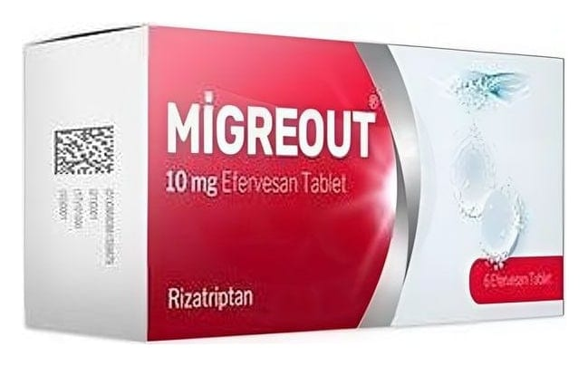

Migreout 10 mg Efervesan Tablet, 3 Adet

Ne için kullanılır
KT · Bölüm 1 MİGREOUT, 3,6 ve 10 adet efervesan tablet içeren blister ambalajda sunulmaktadır. MİGREOUT, beyaz renkli, iki tarafı düz yüzeyli, silindirik efervesan tabletler şeklindedir. MİGREOUT seçici serotonin 5-HT 1B/1D reseptör agonisti olarak bilinen bir ilaç grubuna dahildir. MİGREOUT efervesan tablet 10 mg rizatriptana eşdeğer 14,53 mg rizatriptan benzoat içermektedir. MİGREOUT size migren krizinizin baş ağrısı safhasını tedavi etmek için doktorunuz tarafından reçetelenmiştir. Migren krizindeki baş ağrısının nedeni beyninizi çevreleyen kan damarlarında oluşan genişlemedir. MİGREOUT kan damarlarınızdaki genişlemeyi azaltarak tedavi edici etkisini gösterir.